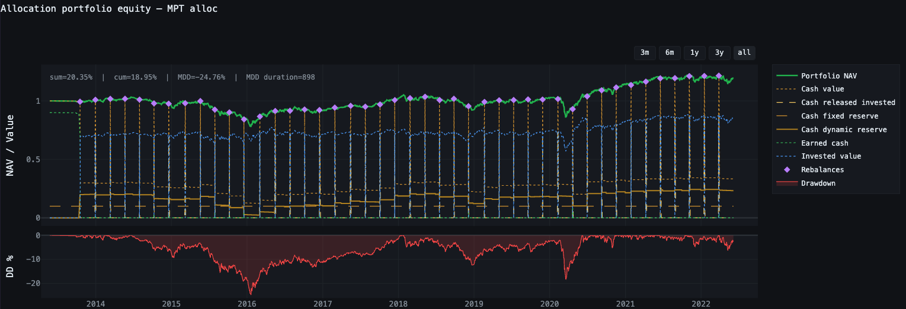
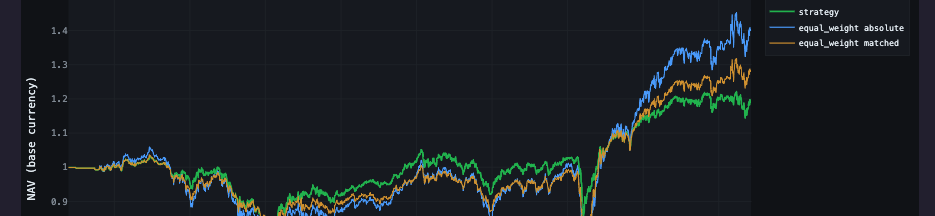
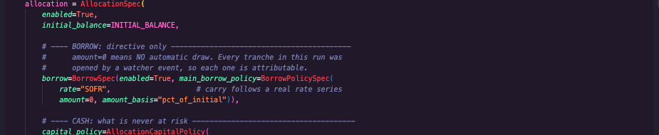
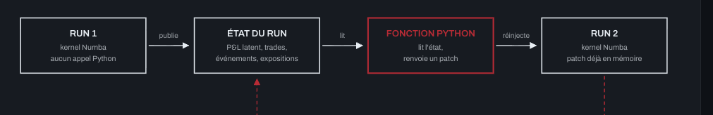
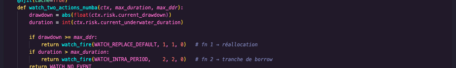

L'objectif du projet : réduire le temps entre une hypothèse d'investissement, son test et sa validation. L'utilisateur écrit la logique de sa stratégie, et déclare la politique comptable du portefeuille : la trésorerie, l'emprunt, les frais et les devises sont des leviers à sa main. Il n'a à construire ni le moteur qui l'exécute, ni la couche qui juge le résultat.
Un noyau compilé en Numba tient la comptabilité du portefeuille à chaque barre : paliers de trésorerie, tranches d'emprunt indexées sur un taux de marché réel, plusieurs devises, frais provisionnés sur une horloge et payés sur une autre. Trois modes d'exécution partagent ce kernel : signaux algorithmiques, allocation de portefeuille, et suivi d'un compte réel. La comptabilité de portefeuille appartient aux deux derniers.
Trois modes, un seul kernel. Chacun répond à une question différente, et se mesure donc différemment. C'est le moteur qui applique la bonne mesure, pas l'utilisateur.
La comptabilité de portefeuille appartient à la branche allocation. Le mode investissement en reprend contraintes de rebalancement, et y fait entrer une stratégie algorithmique comme une ligne du portefeuille, avec sa propre gestion du risque et son accès à la trésorerie. C'est pourquoi la couche de sizing, greffée sur la branche algorithmique, remonte jusqu'à lui. L'investissement se traite au comptant.
Signaux, setups, routage par régime, entrées et sorties sous une exécution réaliste à la barre. Une règle a-t-elle un edge ?
Poids cibles, calendriers de rebalancement, paliers de trésorerie, emprunt et frais. Une règle de pondération bat-elle la détention équipondérée ?
Apports et retraits, high-water marks, gates de drawdown, restauration du capital. Qu'a réellement vécu un compte ?


Ce que la couche a renvoyé lorsqu'elle a été pointée sur la stratégie. Trois tests, trois verdicts, les sorties brutes non retouchées, et l'énoncé de ce qu'ils ne permettent pas de conclure.

Le code réel que l'utilisateur écrit et la sortie réelle que le moteur renvoie. Quarante lignes déclarent les réserves, l'emprunt indexé, les frais à deux horloges et quatre devises. Le bilan boucle à l'unité près.

Comment un kernel compilé prend des décisions qui dépendent de son propre passé. Trois régimes, trois schémas, et ce que chacun coûte.

Le moteur algorithmique, publié : de quoi définir un signal, le faire tourner sous un modèle d'exécution réaliste, et inspecter les trades produits.
Aucune stratégie gagnante n'est présentée ici. La stratégie testée est une construction de manuel, retenue parce qu'elle est connue et reproductible. L'objet de ces pages est l'instrument qui la juge.
The point of the project: cut the time between an investment hypothesis, its test and its validation. The user writes the logic of the strategy, and declares the portfolio's accounting policy: cash, borrowing, fees and currencies are levers in their hands. Neither the engine that runs it nor the layer that judges the result has to be built.
A Numba-compiled core keeps the portfolio's books on every bar: cash tiers, borrow tranches indexed on a real market rate, several currencies, fees that accrue on one clock and are paid on another. Three execution modes share that kernel: algorithmic signals, portfolio allocation, and tracking a real account. The portfolio accounting belongs to the last two.
Three modes, one kernel. Each answers a different question, and is therefore measured differently. The engine applies the right measure, not the user.
The portfolio accounting belongs to the allocation branch. Investment mode takes it over without inheriting its rebalance constraints, and brings an algorithmic strategy in as a line of the portfolio, with its own risk management and its own access to cash. That is why the sizing layer, grafted onto the algorithmic branch, carries up into it. Investment mode is spot only.
Signals, setups, regime routing, entries and exits under a realistic bar-level execution model. Does a rule have an edge?
Target weights, rebalance calendars, cash tiers, borrowing and fees. Does a weighting rule beat holding everything equally?
Contributions and withdrawals, high-water marks, drawdown gates, capital restoration. What did an account actually live through?
What the layer returned when it was pointed at the strategy. Three tests, three verdicts, the unedited raw output, and a statement of what they do not establish.
The real code that is written and the real output it returns. Forty lines declare the reserves, the indexed borrowing, fees on two clocks and four currencies. The balance sheet closes to the last unit.
How a compiled kernel makes decisions that depend on its own past. Three regimes, three diagrams, and what each one costs. French only for now.
The algorithmic engine, published: enough to define a signal, run it under a realistic execution model, and inspect the resulting trades.
No winning strategy is presented here. The strategy under test is a textbook construction, chosen because it is well known and reproducible. What these pages are about is the instrument that judges it.